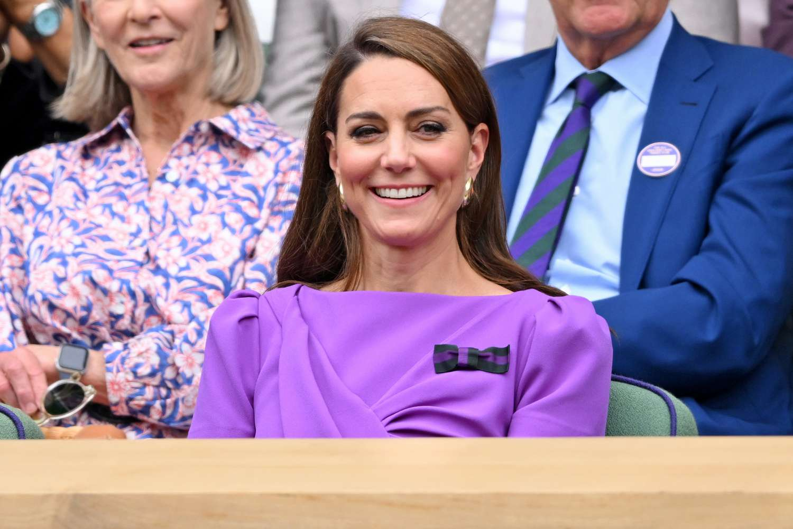

Princess of Wales receives standing ovation from Centre Court crowd as she attends Wimbledon men's final
 Catherine, Princess of Wales, received a standing ovation from the Centre Court crowd as
she attended
the Wimbledon men's singles final on Sunday alongside her daughter Princess Charlotte.
Kate and Charlotte greeted several British tennis players, including Emma Raducanu, before taking their
seats in the Royal Box
for the showdown between reigning champion Carlos Alcaraz and seven-time winner Novak Djokovic.
Kate - who is known to have a passion for sports and is an enthusiastic tennis fan -
has been patron of the All England Lawn Tennis and Croquet Club since 2016.
It is only her second public appearance this year following her cancer diagnosis.
It was found after she underwent major
abdominal surgery shortly after Christmas and spent
almost two weeks in the London Clinic hospital.
In June, Kate - who is still undergoing treatment - delighted royal-watchers joining
King Charles III and family members for the
Trooping the Colour ceremony to mark the monarch's official birthday.
The popular royal offered an update on her health journey last month,
saying that she was making
“good progress” in her recovery.
She added that there were “good days and bad days” but
that while she was hoping to participate
in more engagements over the summer, she acknowledged she was “not out of the woods yet.”
It's a busy weekend for the Wales family.
While Kate is in southwest London for the tennis final,
her husband Prince William is due in Berlin for the UEFA Euro 2024 final between England and Spain.